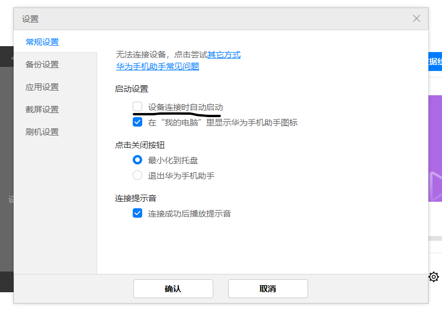
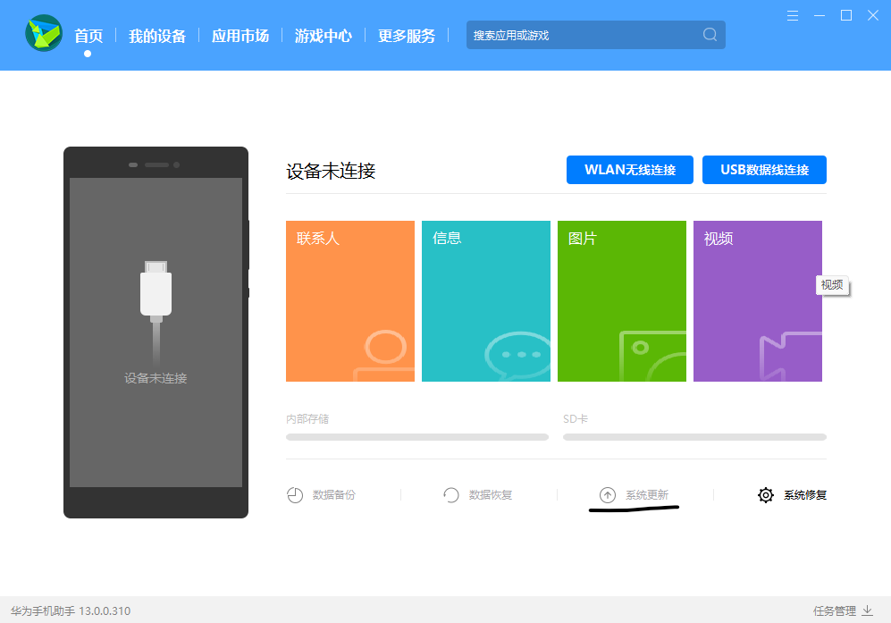
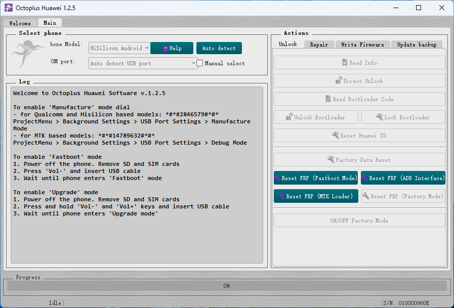
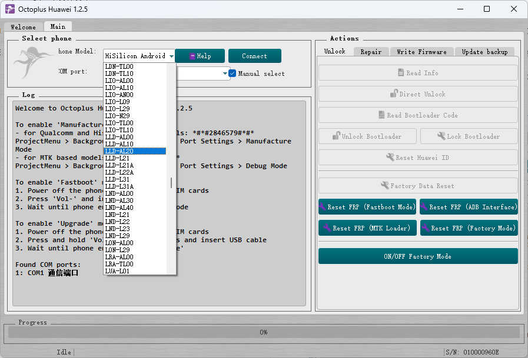
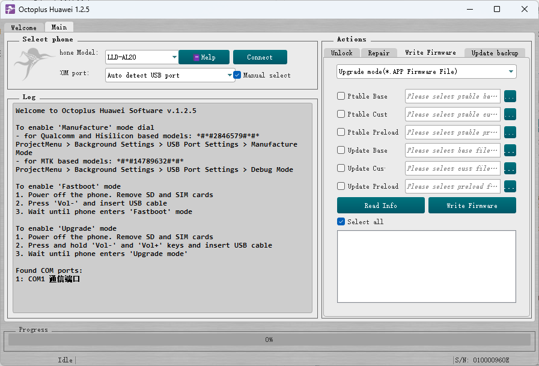
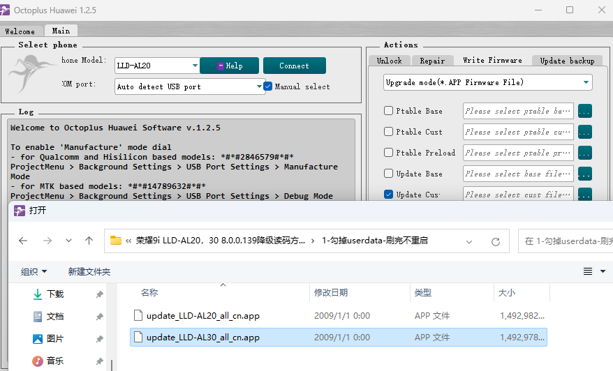
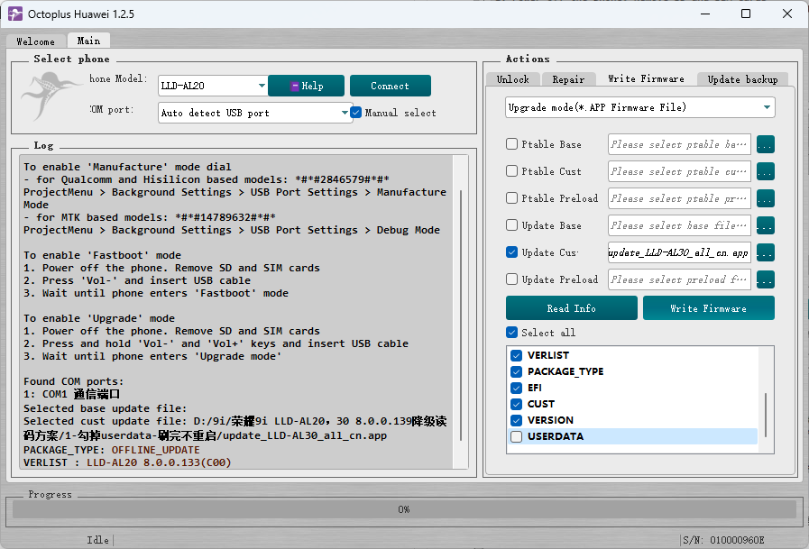
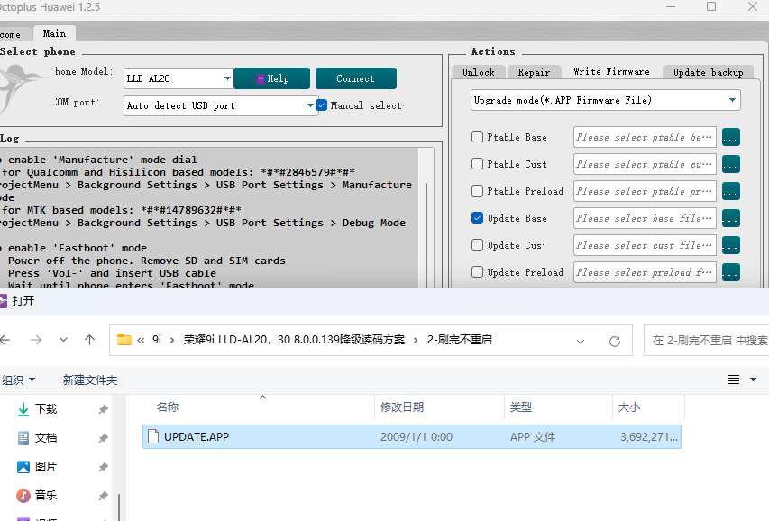
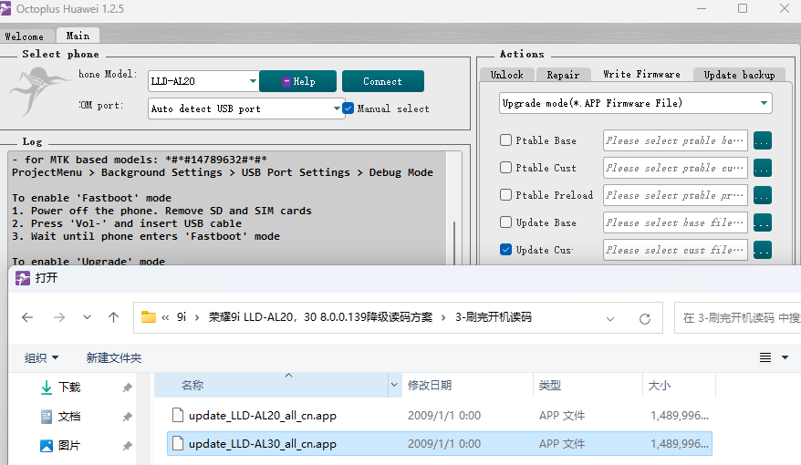
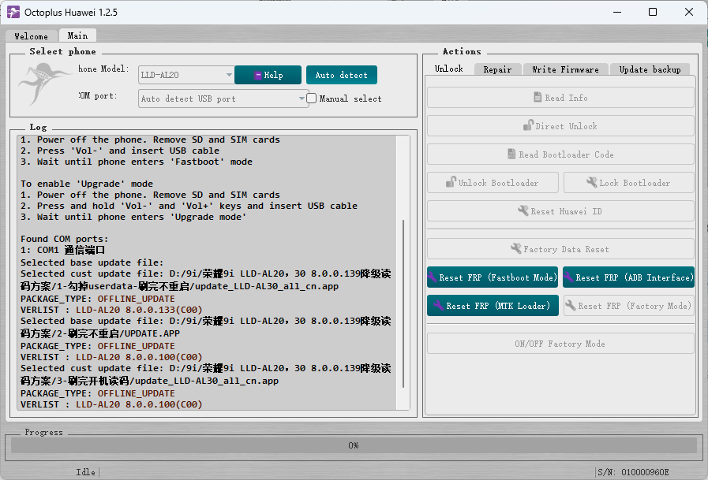

本文仅适用于解除荣耀9i手机（LLD-AL20或LLD-AL30）的bl锁，不适用于其他机型。
注意事项
1.解锁bootloader是高风险操作，本人不承担由此导致的任何后果。
2.降级和解锁均会清除所有数据，且无法恢复。刷机前请先备份数据，并确认备份的数据是否完好。
3.解锁前请先关闭查找手机，退出华为账号并删除指纹和锁屏密码。如果设备有账号锁，请先通过合法的手段解除。
如果有闹铃，请关闭并删除闹铃。
方法
1.拆机短接，参考部分华为麒麟手动获取BL解锁码
2.降级并使用octoplus读码
下面主要讲如何降级读码
开始
1.获取octoplus加密狗
有三种方法：直接买，找大佬借，以及到淘宝/闲鱼租
如果你是土豪，不嫌贵，可以直接买
不想花钱也可以找大佬借
到淘宝/闲鱼租也不贵，一般2-5元就能搞定，一小时就能解决
（华为手机助手降级时不需要使用oc加密狗。请在需要使用octoplus时再租，以免造成浪费）
2.确认系统版本
打开手机设置，查看“EMUI版本”
若版本高于8.0.0.139，则需先华为手机助手降级，再oc线刷降级，再读码
若版本高于8.0.0.100低于8.0.0.139，则需先oc线刷降级，再读码
若版本为8.0.0.100，直接读码即可
3.使用华为手机助手降级
用数据线连接手机，打开华为手机助手
首先关闭“设备连接时启动”

点击“系统更新”，按提示降级即可

4.使用octoplus线刷降级
下载文末链接里的内容，安装华为驱动和octoplus
解压荣耀9i LLD-AL20，30 8.0.0.139降级读码方案（2021.5.20）.7z到一个文件夹里
安装所有软件
手机进入线刷升级模式，方法：将手机完全关机，取下SIM卡和SD卡。
先按住音量上下键，再插入和电脑相连的数据线，手机会自动启动并进入线刷升级模式，此时松开音量键
连接好手机和加密狗，打开octoplus

点击 manual select

型号选择LLD-AL30，如果没有就选择LLD-AL20

点击右上角的Write Firmware

勾选Update Cust，点右面三个点，打开解压的第一个文件夹，按型号选择刷机包

取消勾选userdata，点击下面的White Firmware，等待刷入完成
刷入完成后，若询问是否重启，选择“No”即可

取消勾选Update Cust，勾选Update Base，点右面三个点，打开解压的第二个文件夹，选择刷机包，点击下面的White Firmware，等待刷入完成
刷入完成后，若询问是否重启，选择“No”即可

取消勾选Update Base，勾选Update Cust，点右面三个点，打开解压的第三个文件夹，按型号选择刷机包，点击下面的White Firmware，等待刷入完成
三个包全部刷入完成后，拔掉数据线，长按电源键强制重启
至此，降级完成，设备开机后，请确认设备的系统版本为8.0.0.100
5.octoplus开机读码
设备开机后，确认设备的系统版本为8.0.0.100
打开拨号，输入* # * # 2846579 # * # *
点击“后台设置”，用数据线连接手机，然后后台模式选择生产模式

勾掉manual select，点击auto detect，等待完成
然后点右面的Read Bootloader Code
留意左边的日志信息，如果成功，解锁码就会在日志中显示
至此，读码成功！
解锁
1 | |
至此，设备已经解锁，重启后会进行低级格式化操作，手机所有数据都会丢失，且无法恢复。
后记
因为某些因素，降级解锁时的很多图片已经丢失。如果有什么疑惑的地方，可以直接在酷安私信我寻求帮助。
因本人马上高中开学，可能两个星期才有机会看一次，回复不会很及时，请见谅。
这篇文章的降级解锁方法以及文件来自@某贼 大佬以及萤火虫资源站，感谢大佬们的辛勤付出。